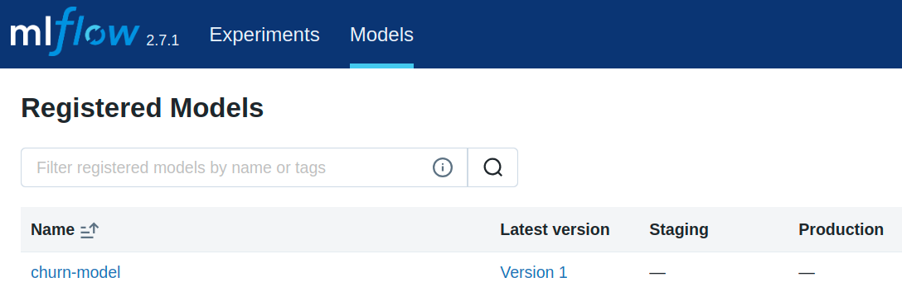

Model Registry
Introduction
In the last class we saw how to track models using, for example, commands such as mlflow.sklearn.log_model().
Question 1
Answer!
It is common for ML products to have hundreds of iterations and changes (to data, parameters, algorithms) in an attempt to improve performance.
There comes a time when we are simply lost! Tracking module of MLFlow, which allows users to log and organize their experiments, allows data scientists to reproduce the results of an experiment. So reproducibility is the main advantage!
MLflow Model Registry
Another component of MLFlow is the Model Registry, which serves as a centralized model store, provides a set of APIs, and UI, to collaboratively manage the full lifecycle of an MLflow Model.
Important!
While tracking and logging are important for reproducibility, registering a model is important for production.
In the last class, when calling mlflow.sklearn.log_model, notice that we used the registered_model_name argument. This way, the model was logged at the same time it was registered.
signature = mlflow.models.signature.infer_signature(
X_train, log_reg.predict(X_train)
)
mlflow.sklearn.log_model(
log_reg,
"model",
signature=signature,
registered_model_name="churn-model", # <-- LOOK HERE!
input_example=X_train.iloc[:3],
)
To understand the effects of model registration, access the Models tab in the MLflow UI.

You will see that at least one model was generated in this tab, starting at version 1, with the version being increased each time the model is registered again.
Question 2
Answer!
No! Many runs will just be experiments, part of the trial and error process. A run doesn't always need to be registered!
Question 3
Answer!
The log is generated but the model is not registered.
Tip! 1
You can register the model explicitly with mlflow.register_model.
Furthermore, it is possible to consult the Run ID of a previously run experiment and use mlflow.register_model to register without having to run the experiment again!
See more HERE
Question 4
Docker from MLflow
MLflow has many facilities for deploying models. You can use MLflow, for example, to create docker images to deploy anywhere you want, without explicitly creating APIs.
To test this functionality, choose a registered version of your template.
Question 5
Question 6
Question 7
Question 8
Make Request
To test whether the model is functional, we can use CURL or python requests. See an example:
Click to see the Code to test the model!
import requests
# Create two records in dataframe_split format
# See more:
# - https://docs.databricks.com/en/machine-learning/model-serving/score-model-serving-endpoints.html
# - https://mlflow.org/docs/latest/models.html
data = {
"dataframe_split": {
"index": [0, 1],
"columns": [
"standardscaler__CreditScore",
"standardscaler__Age",
"standardscaler__Tenure",
"standardscaler__Balance",
"standardscaler__NumOfProducts",
"standardscaler__HasCrCard",
"standardscaler__IsActiveMember",
"standardscaler__EstimatedSalary",
"onehotencoder__Geography_Germany",
"onehotencoder__Geography_Spain",
"onehotencoder__Gender_Male",
],
"data": [
[
0.7034400277211882,
-0.7630345384131269,
1.3849932562860656,
-1.3317392101122278,
0.7223895363269841,
0.6490271882799827,
1.0671385552841972,
0.7424225974664149,
0,
0,
1,
],
[
-0.31813189579236545,
-1.5202590849095197,
-0.32807215528511574,
-1.3317392101122278,
-0.7700253680702854,
0.6490271882799827,
-0.9370854375453458,
0.7870485912430844,
0,
0,
1,
],
],
}
}
# Make request
resp = requests.post("http://localhost:8080/invocations", json=data)
# Print predictions
print(f"Status code: {resp.status_code}")
print(f"Response: {resp.text}")
Note that an API was generated for the model, but at no point was it necessary to specify the route and other settings! MLflow helped us in another stage of the model life cycle!